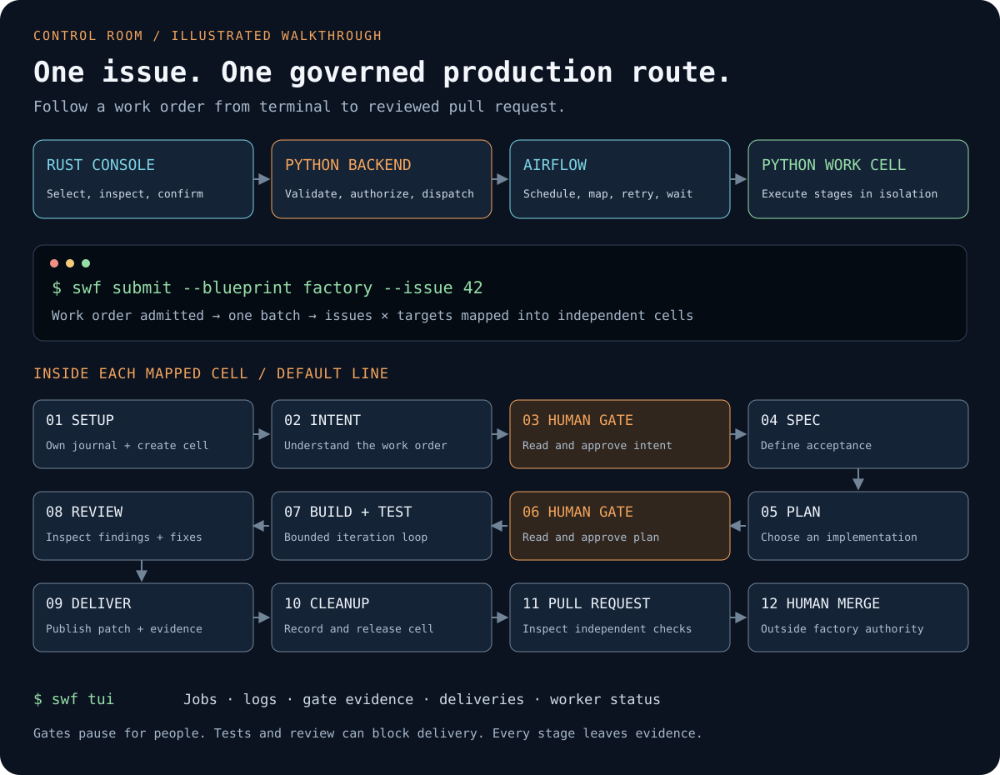

SWFactory · Alpha
From GitHub issue to reviewed pull request.
Coding agents write the plan and the code, then review the change. Trusted factory code runs the tests, and the backend publishes a pull request with the evidence attached. Airflow schedules the work. On the default line a person approves the intent and the plan, and a person merges. An autonomous line for documentation-only changes is experimental.
Run it
You need Git, Python 3.12, and uv. No model key is required for the scripted local demo.
git clone https://github.com/zozo123/ariflow-swfactory.git
cd ariflow-swfactory
uv sync --locked
uv run swfactory demo
The demo writes its stage report to .factory/<run_id>/report.json and
the local PR description to .factory/<run_id>/pr.md. This fixture replay
makes no model calls and opens no GitHub PR.
To run with Claude through Databricks, follow the model gateway setup. The real-model Docker rehearsal retains tests, review, and local delivery evidence.
How it works
- 1. Submit a GitHub issue. A GitHub issue selects a versioned blueprint and target.
- 2. Create one durable Cell. The Cell owns issue, target, epoch, state, and evidence.
- 3. Let Airflow guide the lifecycle. Airflow is the only lifecycle scheduler: retries, waits, approvals, and cancellation.
- 4. Run agents in disposable compute. The agent gets a bounded job and sandbox. It does not get release authority.
- 5. Verify the exact candidate. Tests and review produce scoped evidence; missing checks and unresolved limits stay visible.
- 6. Publish for review. The trusted control plane creates the PR. Human-approved lines leave the merge decision to an operator.
issue -> cell -> Airflow -> agent work -> verification -> pull request
Evidence has a scope.
SWFactory records each check's result and the uncertainty that remains; evidence informs a release decision but never grants permission to release. Read the design rationale.
One issue, end to end
The drawing follows a single issue from the operator console to a pull request a person merges: where Airflow maps the work into cells, which two stages stop and wait for a human, and where each stage leaves evidence behind.

uv run swfactory demo to
watch the same stages replay locally and print a real stage report.
Operational boundaries
- Scheduling: Apache Airflow only.
- Identity: one durable Factory Cell per issue and target.
- Mutations:
(cell_id, epoch, operation_key)is fenced or idempotent. - Authority: sandboxes can edit; they cannot approve, publish, or promote themselves.
- Evidence: success, refusal, repair, latency, and cost stay attached to the run.
Sandbox support
A sandbox is disposable compute, not a scheduler. Policy support is backend-specific. The factory owns the issue-to-PR route; providers supply the execution boundary.
Each status below is the support value of that profile's row in
the capability inventory, which is the single public truth for a claimed feature.
A profile with no claim is an integration seam.
| Profile | Support | Boundary |
|---|---|---|
local | test only | process execution; no kernel isolation claim |
srt | experimental | Sandbox Runtime policy boundary |
docker | experimental | container boundary |
islo | experimental | provider-backed disposable cell |
toolset | adapter | common-ai SandboxBackend |
daytona | custom backend required | provider integration seam |
e2b | custom backend required | provider integration seam |
tensorlake | custom backend required | provider integration seam |
boat | adapter | boat.dev hosted VM (WorldGen pilot, scripted agent) |
toolset_backend = "package.module:Class" and run with
--sandbox toolset. If a required isolation policy is unsupported, the run
stops with StageError. The factory does not fake provider capabilities.
Blueprints are routes, not schedulers
A blueprint defines steps, limits, approvals, and sandbox choice. It compiles into work
that Airflow schedules. Astronomer Blueprint users can expose the same route as
software_factory without creating a second lifecycle authority.